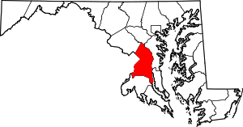

2022 Prince George's County Maryland Trash Visualizer
Info
Organization
RHHilarios
ExpressBusiness
CommunityBridge
Bag Quantity
Max Markers
Locate
Using the Trash Visualizer
1. Select the organization you want to research. (RHHilarios, ExpressBusiness, CommunityBridge)
2. Enter how many bags or more you want to see, (1 will show all of the trash collected)
3. Enter the max number of markers, recommended is 50 so it won't overload your browser.
PG County Location
